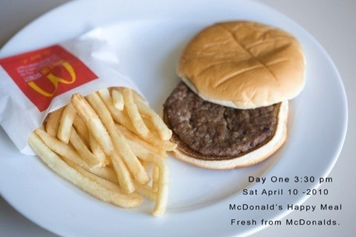
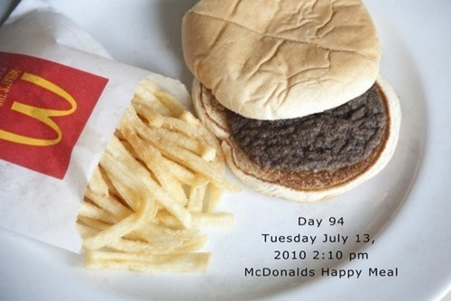

Thu, 16 Sep 2010 17:40:00 · McDonalds · burger · food · health
McDonald's Burger Don't Age
If you love eating McD burger, you better start reconsidering what this ‘happy meals’ does to your body when even bacteria don’t like it.
Artist Sally Davies has been photographing one McDonald’s hamburger and fries every day for 137 days. They look basically the same…!

^ Day one

^ Day 94, or three months later…
Still think that those Happy Meal is actually food?
If you curious on how this burger [doesn’t] change over the course of 4.5 months, read more here ~ and see the whole documentary progression here.